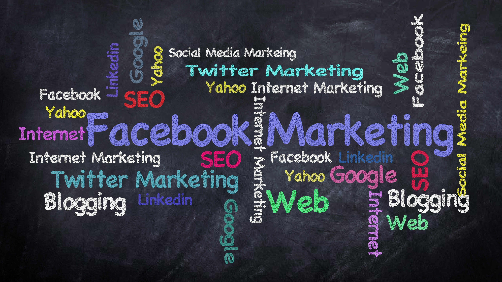

Methods of Dissemination
Fake news spreads through various channels, primarily social media platforms like Facebook and Twitter. These platforms use algorithms designed to keep users engaged, often prioritizing sensational content over factual accuracy. This has made it easier for fake news to spread rapidly and reach a wide audience.
Additionally, fake news is often disseminated through bots and troll farms that are designed to artificially inflate the popularity of certain stories. These automated accounts and coordinated groups can share and promote fake news at an incredibly fast rate, making it appear more credible and widely accepted.
Other methods of dissemination include email chains, websites with misleading information, and even traditional media sources that fail to verify their sources. This multi-faceted approach ensures that fake news reaches a diverse audience through multiple touchpoints.
The rise of echo chambers on social media has also contributed to the spread of fake news. Users tend to follow and interact with content that aligns with their preexisting beliefs, creating a feedback loop where misinformation is continuously reinforced.
